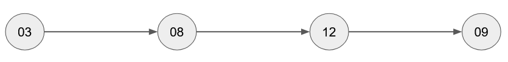
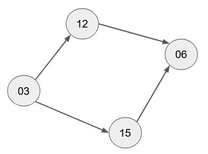

Evento são ligados às atividades, de maneira a formar uma rede PERT. O evento ou eventos que imediatamente seguem aos outros sem interferir nesses, são chamados eventos sucessores.
Em qual das duas redes PERT abaixo, o evento 12 é sucessor do evento 3?
(1)

(2)

vire para a página 31.